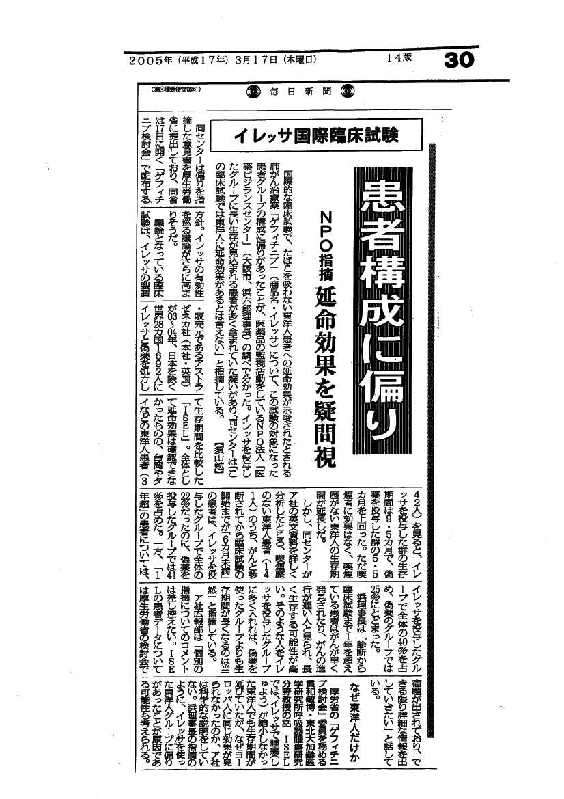

速報No５１、No５３で報告したように、イレッサのＩＳＥＬ試験には重大な欠陥＜患者の割付に大きな偏り＞があり、信頼できないことを指摘し、アストラゼネカ社と厚生労働省にデータを要求していたが、そのことについて毎日新聞が以下のように大きく報道した。
また、生データを委員の統計学者に委託して再解析し、その結果が24日（第4回検討会）には提出される予定であることが、17日（第3回検討会）報告された。この異例の措置がとられた背景には、当センターの厳しいデータ分析が関係していよう。
国際的な臨床試験で、たばこを吸わない東洋人患者への延命効果が示唆されたとされる肺がん治療薬「ゲフィチニブ」（商品名・イレッサ）について、この試験の対象になった患者グループの構成に偏りがあったことが、医薬品の監視活動をしているＮＰＯ法人「医薬ビジランスセンター」（大阪市）の調べで分かった。【須山勉】
同センターは偏りを指摘した意見書を厚生労働省に提出しており、同省は１７日に開く「ゲフィチニブ検討会」で配布する方針。イレッサの有効性を巡る議論がさらに高まりそうだ。
議論となっている臨床試験は、イレッサの製造・販売元であるアストラゼネカ社（本社・英国）が０３〜０４年、日本を除く世界２８カ国１６９２人にイレッサと偽薬を処方して生存期間を比較した「ＩＳＥＬ」。全体として延命効果は確認できなかったものの、台湾やタイなどの東洋人患者（３４２人）を見ると、イレッサを投与した群の生存期間は９・５カ月で、偽薬を投与した群の５・５カ月を上回った。ただ喫煙者に効果はなく、喫煙歴がない東洋人の生存期間が延長した。
同センターがア社の英文資料を詳しく分析したところ、喫煙歴のない東洋人患者（１４１人）のうち、がんと診断されてから臨床試験の開始までが「６カ月未満」の患者は、イレッサを投与したグループで全体の２２％だったのに、偽薬を投与したグループでは４１％を占めた。一方、「１年超」の患者については、イレッサを投与したグループで全体の４０％を占め、偽薬のグループでは２５％にとどまった。
浜理事長は「診断から臨床試験まで１年を超えている患者はがんが早く発見されたり、がんの進行が遅い人と見られ、長く生存する可能性が高い。そのような人をイレッサを投与したグループに多く入れれば、偽薬を使ったグループよりも生存期間が長くなるのは当然」と指摘している。
ア社広報部は「個別の指摘についてのコメントは差し控えたい。ＩＳＥＬの患者データについては厚生労働省の検討会で宿題が出されており、できる限り詳細な情報を出していきたい」と話している。
◇なぜ東洋人だけか−−厚労省の「ゲフィチニブ検討会」委員を務める貫和敏博・東北大加齢医学研究所呼吸器腫瘍研究分野教授の話：ＩＳＥＬでは、イレッサで腫瘍（しゅよう）が縮小しなかった東洋人でも生存期間が延びていたが、なぜヨーロッパ人に同じ効果が見られなかったのか、ア社は科学的な説明をしていない。浜理事長の指摘のように、イレッサを使った東洋人グループに偏りがあったことが原因である可能性も考えられる。（毎日新聞） - 3月17日3時5分更新
アストラゼネカ社から提供されたイレッサの臨床試験の生データを、ゲフィチニブ検討会委員である統計学専門家が解析し、その結果を3月24日の検討会に提出することになったことが、３月17日開催された第３回ゲフィチニブ検討会で明らかになった。毎日新聞が以下のように的確に報道している。
国際的な臨床試験で、たばこを吸わない東洋人患者への延命効果が示唆されたとされる肺がん治療薬「ゲフィチニブ」（商品名・イレッサ）について、北里大大学院薬学研究科の竹内正弘・臨床統計部門教授が同試験の生データを再分析することになった。結果は２４日に開かれる厚生労働省のゲフィチニブ検討会で公表される予定。
イレッサの製造・販売元であるアストラゼネカ社は、世界２８カ国１６９２人の肺がん患者を対象に臨床試験を行い、東洋人への延命効果が示唆されたと分析した。ほかの人種で延命効果は確認されず、分析方法や対象患者の構成などに疑問の声が上がっている。
厚労省はア社にこの試験の生データを提出するよう要請し、検討会委員である竹内教授が再分析することになった。竹内教授は米国食品医薬品局（ＦＤＡ）で勤務経験のある臨床統計の専門家。（後略） 【須山勉、山本建】 毎日新聞 2005年3月17日 19時31分
生データの再解析は、重要な検討対象ＩＳＥＬ試験の根本的見直しにもつながりうる。このような再解析がゲフィチニブ検討会の最終段階になって行われるのは、極めて異例とも言うべき事態である。
背景因子の偏りはそれほど、重大な意味がある！！